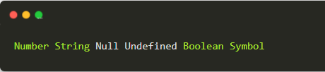

JS内存机制
JavaScript具有自动垃圾回收机制，周期性会检查没有使用的变量，进行回收释放。所以在闭包中，如果引用了外部的变量，则无法进行释放和回收，一般会传参进去。
垃圾回收：找出那些不再继续使用的变量，然后释放其占用的内存，垃圾收集器会按照固定的时间间隔周期性地执行这一操作。
在JS中，每一个数据都需要一个内存空间，内存空间又分为栈内存(stack)与堆内存(heap)。
栈内存一般储存基础数据类型

看一个例子：

我们定义一个变量num，系统自动分配存储空间。我们可以直接操作保存在栈内存空间的值，因此基础数据类型都是按值访问。
数据在栈内存中的存储与使用方式类似于数据结构中的堆栈数据结构，遵循 后进先出的原则。
堆内存一般储存引用数据类型

JS的引用数据类型，比如数组Array，它们值的大小是不固定的。引用数据类型的值是保存在堆内存中的对象。JavaScript不允许直接访问堆内存中的位置，因此我们不能直接操作对象的堆内存空间。
通过下面这张图，我们就能直观理解。


因此当我们要访问堆内存中的引用数据类型时，实际上我们首先是从栈中获取了该对象的指针，然后再从堆内存中取得我们需要的数据。
所以，我们经常说：基本类型赋值相互不影响，引用类型赋值，会影响原对象。
一个例子就能看明白：

总结：
- JavaScript具备自动垃圾回收机制
- JS内存分为堆内存和栈内存
- 引用类型在栈中保存指针，在堆中保存对象值
- 栈内存数据遵循先进后出
EventLoop
现在前端面试，大家都喜欢问EventLoop，但说实话，很多人看了无数篇文章，还是稀里糊涂，今天依然通过代码+图片的方式给大家演示效果。
为了更好的理解事件机制，我们需要先介绍执行栈。所有JS代码运行都是被放入执行中执行的，遵循进栈和出栈，直到栈被清空。
执行栈
JS 代码在运行前都会创建执行上下文，也可以理解为执行环境，JS 中有三种执行上下文：
- 全局执行上下文，默认的，在浏览器中是 window 对象
- 函数执行上下文，JS 的函数每当被调用时会创建一个上下文。
- Eval 执行上下文，eval 函数会产生自己的上下文。
通常，我们的代码中都不止一个上下文，那这些上下文的执行顺序应该是怎样的？从上往下依次执行？
栈，是一种数据结构，遵循先进后出的原则。JS 中的执行栈就具有这样的结构，当引擎第一次遇到 JS 代码时，会产生一个全局执行上下文并压入执行栈，每遇到一个函数调用，就会往栈中压入一个新的上下文。引擎执行栈顶的函数，执行完毕，弹出当前执行上下文。
接下来，我们看一个例子：

这个毫无疑问，大家都知道答案，执行栈是怎么调用的？

首先执行这个JS文件，创建一个全局上下文，并压入执行栈中，当 foo() 函数被调用时，将 foo 函数的执行上下文压入执行栈，接着执行输出 ‘1’；当 bar() 函数被调用，将 bar 函数的执行上下文压入执行栈，接着执行输出 ‘2’；bar() 执行完毕，被弹出执行栈，foo() 函数接着执行，输出 ‘3’；foo() 函数执行完毕，被弹出执行栈，最后清空整个执行栈。这就是先进后出，Foo先被压入执行栈，最后才被弹出执行栈
EC就是Execute Context执行上下文
总结：
- 所有JS代码运行，都需要放入执行栈中.
- 执行上下文包含了三种（全局、函数、eval）
- 栈是一种数据结构，遵循先进后出
接下来，看一道经典面试题

上面的面试题打印结果：1 3 2 100 4
你能说出具体执行步骤吗？
我们都知道JS本身是单线程的，一次只能干一件事儿，那么像定时器、Promise这些它是怎么处理的呢？实际上就要介绍quene队列了。
主线程执行同步代码块，遇到定时器、Promise等异步任务时，会创建事件队列，把他们丢到队列里面去，等主线程执行完成后，再回去执行队列中的task.
所以，我们的JS执行主要包括同步任务和异步任务，整个同步任务会进入到主线程中，最后放入执行栈中执行，就是我们上面给大家讲解的执行栈，接下来关注异步任务。
浏览器的JS中，异步任务又分为宏任务和微任务，宏任务和微任务都是属于队列，而不是放在栈中。微任务会创建一个队列，宏任务会创建一个队列，而主线程执行完以后，会优先执行微任务，把微任务全部放到执行栈中执行，最后再从宏任务中取出一个放入执行栈进行执行，执行完后，再取一个，直到执行完所有的宏任务。
接下来看张图：

左侧JS图包含了堆和栈，所有的代码都会被放入栈中执行，我们叫执行栈，执行栈是一条主线程，先执行同步任务，中间遇到ajax、setTimeout等异步任务后，会push到queue中，最后再把队列中事件取出来放入执行中执行，依次循环这个过程。
那我们再来看上面的例子：

- 创建全局上下文，并压入执行栈中
- 把同步代码console.log压入执行栈中执行，打印1，并出栈
- 把同步代码new Promise压入执行栈中执行，打印3，并出栈
注意：new Promise 这个过程实际上是同步的，只有resolve和reject后才是异步
- then属于异步任务，push到微任务队列中，并创建事件
- setTimeout属于异步任务，push到宏任务队列中，并创建事件
注意：宏任务和微任务是两个队列
- 把同步代码console.log压入执行栈中执行，打印2，并出栈
到此整个执行栈只剩下全局上下文，没有可以执行的代码了
- 微任务先执行，所以把微任务队列中的事件全部拿出来，放入执行栈进行执行。打印100，并出栈
- 从宏任务队列中，只取出一个事件放入执行栈中执行，打印4
那我们把上面例子改造一下：

有2个then，2个setTimeout，此时学完后，您觉得应该打印多少？答案是：1 3 2 100 200 4 5
整个文章到此结束，希望大家能够看懂！
总结：
- JavaScript具备自动垃圾回收机制
- JS内存分为堆内存和栈内存
- 引用类型在栈中保存指针，在堆中保存对象值
- 所有JS代码运行，都需要放入执行栈中.
- 执行代码前，会先创建执行上下文
- 执行上下文包含了三种（全局、函数、eval）
- 同步任务先执行，异步任务放队列
- 微任务先执行，宏任务后执行
- 微任务全部拉入执行栈，宏任务一次拉一个
- 栈是先进后出，队列是先进先出